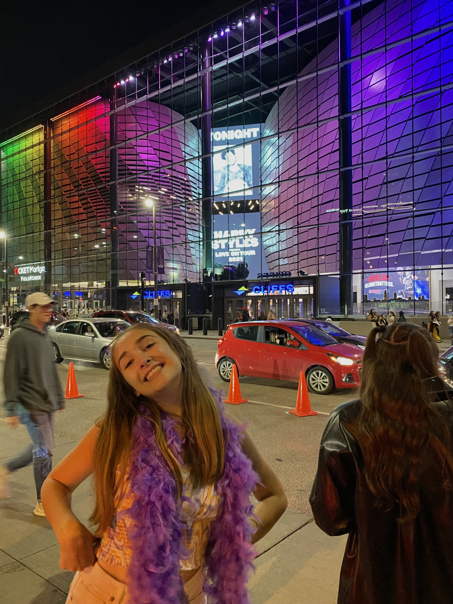
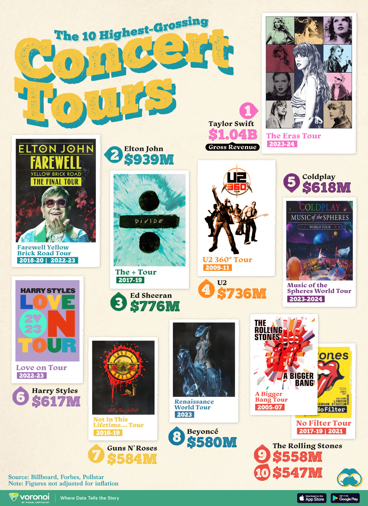

I grew up in a household of fangirls, including my mom and two older sisters. They taught me not to be ashamed of what I like and to be unapologetically myself. After being surrounded by this level of passion growing up, I can now be passionate about the things I love. I think a lot of people can learn from fangirls. Taking away the embarrassing mindset of being a fangirl. Fangirls have created safe spaces to connect with other fans, express themselves, and support each other.
Fangirls have faced backlash since the beginning of the term. Creating a negative connotation for something very positive. This backlash stems from misogyny. It is very important to understand the misogyny of crazy fangirls versus sports superfans and how they are treated. Fangirls have also had a huge cultural impact.
A Her Campus article reads, "From coining viral slang to inspiring memes, fan art, and fashion trends, their dedication and creativity often seeps into mainstream culture long before anyone else even has the chance to notice."Fangirls can often spot what is “cool” before the general public and be early to trends before they are popular.
Even back in the Elvis and Beatles days, the fangirls were early to the trend. They were made fun of by the media at the time, but little did they know, these girls were promoting what would one day be the biggest artists of all time. It has recently been recognized by the industry that the dedication of fangirls drive economical and cultural landscapes. With Taylor Swift and Beyoncé's tours, the fan presence directly mirrored real-world spending. Concert tickets, merchandise, and travel were boosting local economies. Fangirls influence concert set-lists, marketing, and the way artists produce music. The support they give to their favorite artists allows them to explore and experiment with different sounds in their music.
Some artists may not give their fans recognition for their support, while others do. Rolling Stone magazine asked Harry Styles if he feels like he has to prove himself as a serious artist and not just appeal to teenage girls.
“You're gonna tell me they’re not serious? How can you say young girls don’t get it? They’re our future. Our future doctors, lawyers, mothers, presidents, they kind of keep the world going," responded Styles. "Teenage-girl fans – they don’t lie. If they like you, they’re there. They don’t act ‘too cool.’ They like you, and they tell you. Which is sick." He recognizes who made his career as an artist possible.

Another artist, Tucker Pillsbury, who goes by the artist name Role Model, praised his fanbase, saying that having a primarily female fanbase is "the best case scenario".
A Satorial Magazine article reads, “We see that the only constant is the disrespect of the women who powered these large cultural shifts. Being a fangirl is not acceptable until it becomes a part of history. Being loud or obnoxious is not the problem; society has an issue with passionate women. When women love something on a large scale, something more than a fandom happens. They make cultural shifts.”Back to top!
They explain how society demeans girls' interests just for these interests to be a part of history years later. Some of the biggest artists who reshaped the music industry got popular because of the support and passion of fangirls.